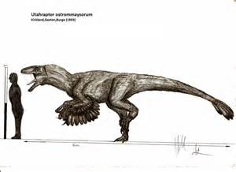
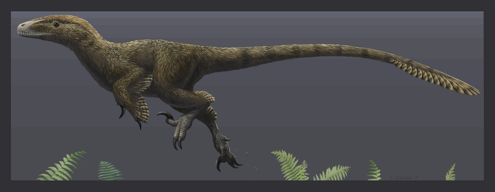

Utahraptor

Facts
Utahraptor was a carnivore (meat-eater) that lived in North America during the early Cretaceous period, between about 132 and 119 million years ago. Its name, was chosen in reflection of the fact that it was discovered in the Cedar Mountain Formation in Grand County, Utah.Utahraptor was about 21 feet (6 meters) long, about 6½ feet (2 meters) tall, and probably weighed around 1,500 pounds (700 kilograms).Utahraptor's most formidable weapon was the hige curved claws on its hind feet. Older reconstructions of the animal generally depict as being featherless, or with perhaps a crest of a few feathers. Today however, there the view that this animal would have been covered in feathers is increasingly accepted.
Size Difference
Utah Raptors where the bigest raptors.Scientists call Velociraptor, Microraptor, and their kin "dromaeosaurs" (the unofficial raptor nickname is way cooler, though). At around 18 feet long, Utahraptor could have easily been the biggest of the bunch. However, Asia's impressive Achillobator giganticus might eventually give it a run for its money-if some more complete skeletons emerge.
Utah Raptors Features
They were mainly covered in feathers .They were way taller than the velociraptor. The Claws were about a foot long and ready to tear through anything. They were tall but fast and quick. They had to be fast to survive.
Its jaws were very strong and it could tear its enemys to pieces. It liked meat and could rip its enemy apart in seconds . They were strong and had a tail with feathers tho they had feathers they could not fly .